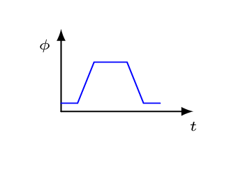
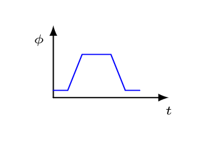
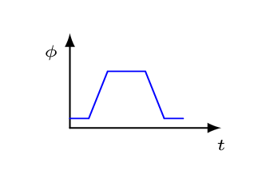

A square coil parallel to page enters a region where a uniform magnetic field is directed perpendicularly into a page, travels through the region at a constant speed, and exits.
From the following plots find the one which shows the magnetic flux inside the coil as a function of time.
(a)
(b)
(c)

If the edge length of the coil is a = 20 cm and the magnetic field is B = 0.5 T. What is the maximum flux inside the coil?
2.
A square coil placed in a uniform magnetic field rotates around one of its edges as shown in figure below.
From the following plots, find the one which shows the magnetic flux inside the coil as a function of angle \(\theta.\)
(a)
(b)
(c)
If the edge length of the coil is a = 20 cm and the magnetic field is B = 0.5 T. What is the maximum flux inside the coil?
3.
A small particle of mass 2 g and charge \(10 \,\mu C\) is passes through the origin with a velocity of \(2 \,m/s\) in the +x direction into a uniform magnetic field parallel to the z-axis and a uniform gravitational field of 1 gauss in the -y direction.
If there is no electrical field and the particle continues moving in a straight line at constant speed, what is the magnetic force on the particle?
What is the magnitude and direction of the magnetic field?
If the particle attained its speed by sliding down a ramp before entering the magnetic field, what was the height of the ramp?
4.
A electron cyclotron has a frequency of \(2.4 \,MH_{z}\) and an orbital radius of 1 m.
What is its magnetic field strength?
What is the speed of the electron?
What was the voltage on the electron gun which projected the electron into the cyclotron?
Hint.
\(m_{e} = 9.11\times10^{-31} \,kg, \quad e = 1.6\times10^{-19} \,C.\)
5.
Each of the lettered points at the corners of the cube in the figure below represents a positive charge q moving with a velocity v in the direction indicated. There is a uniform magnetic field B in the +x direction as shown. Find the magnitude and direction of the magnetic force on each charge.
What is the magnetic flux across the surface abcd?
Through cdef?
Through abfe?
Through all five surfaces enclosing the volume?
7.
An alpha particle (nucleus of a helium atom) has a speed of \(3\times10^{6} \,m/s\) and moves in a circle of radius 10 cm in the x/y-plane due to a uniform magnetic field.
What is the magnitude and direction of the magnetic field?
What is the cyclotron frequency of the alpha particle?
Through what potential difference was it accelerated?
What is its energy in units of electron-volts?
Mag. Force.
8.
A wire 2 m long lies along the y-axis and carries a current of 2 A in the +y direction. What is the magnitude and direction of the magnetic force on the wire if it lies in a uniform magnetic field of
An electromagnetic rail gun consists of two parallel conducting rails of length X = 1000 m spanned by a sliding bar of mass m = 2 kg, length L = 1 m, and resistance \(10\Omega \) as shown in the figure below. A constant electrical potential V = 100 V is maintained between the rails and a constant magnetic field B = 10 T is maintained between them.
What is the magnitude and direction of the current in the sliding bar?
What is the magnitude and direction of the magnetic force on the sliding bar?
Neglecting friction, what is the acceleration of the bar?
Starting from rest at one end of the rail gun, what is the speed of the bar when it reaches the other end?
What is the kinetic energy of the bar when it leaves the rail gun?
How long a time is the bar being accelerated?
How much electrical energy is supplied by the battery during this time interval?
Why aren’t answers g and e the same?
10.
A square wire loop hangs vertically below the horizontal z-axis as shown in the figure below. A uniform magnetic field parallel to the y-axis deflects the wire from its vertical position until it attains equilibrium with the force of gravity. If the length of the square is 10 cm, the current through the wire is 2 A, the deflection angle is \(30^{o},\) and the magnetic field strength is 0.1 T, find
the magnetic moment of the loop,
the magnetic torque on the loop when it is vertical,
the magnetic torque on the loop when it is tilted,
the mass of the loop, and
the total force exerted by the loop on the hinge along the z-axis when it is in tilted equilibrium.
11.
A solenoid is used as the rotor of an electrical motor. It is 10 cm long and 2 cm in diameter. The wire wrapped around it makes 1000 turns and has a resistance of \(100 \,\Omega\text{.}\) The permanent magnets in the motor create a uniform magnetic field of 1000 G and the voltage driving the motor is 12 Volt DC. If the motor runs at 120 rpm, find
the current in the wire,
the magnetic moment of the solenoid,
the magnetic potential energy when the magnetic moment is opposite the field,
the change in magnetic potential energy for each half rotation,
the magnetic power delivered by the motor,
the electrical power delivered by the battery,
the electrical power dissipated by the resistor in the form of heat.
Which of these answers would change if the motor rotated faster?
Are your answers consistent with the law of conservation of energy? Explain.
12.
A proton of mass \(1.67\times10^{-27} \,kg\) and charge \(1.6\times10^{-19} \,C\) is moving in the +x direction with a constant speed of 104 m/s in a region of space containing a constant electric field and a constant magnetic field. If the magnetic field is 10 T in the +y direction,
what is the magnitude and direction of the electric field that will keep the particle moving in a straight line at constant speed?
Describe the subsequent motion of the particle if the electric field is suddenly turned off.
What is the maximum distance the proton would deviate from its initial position when the electric field is turned off?
Mag. Sources.
13.
A wire of length 2a is symmetrically located along the y-axis and carries an upward current I.
What is the magnetic field due to this wire at a distance x along the x-axis?
What does this become when \(x \lt \lt a?\)
When \(x \gt \gt a?\)
14.
Two charges, \(q_{1} = 1 \,\mu C\) and \(q_{2} =- 2 \,\mu C\text{,}\) are moving as shown in the figure below with velocities \(v_{1} = 3.0\times10^{6} \,m/s \) and \(v_{2} = 4.09\times10^{6} \,m/s,\) respectively. At the instant shown in the figure, x = 80 cm and y = 60 cm. Find
the magnitude and direction of the electrical force on \(q_{1}\) by \(q_{2},\)
the magnitude and direction of the magnetic force on \(q_{1}\) by \(q_{2},\) and
the ratio of the magnitudes of these two forces.
15.
Given a circular loop of current I with a radius a.
Show that the magnetic field at a distance x along the axis of this loop is given by
\begin{equation*}
B = \frac{\mu_{o}Ia^{2}}{2(x^{2}+a^{2})^{3/2}}.
\end{equation*}
Use this result to determine the magnetic field along the axis of a coil of N turns.
Use the result of part a to determine the magnetic field at the center of a single loop of current.
What is the magnetic field at the center of a loop of current 10 cm in radius carrying a current of 2 A?
16.
A long straight wire lies along the x-axis carrying 2 A of current in the +x direction. A second, parallel wire located at y = 20 cm carries current of 5 A in the opposite direction.
What is the magnetic field due to these currents at the point (0, 0.1 m)?
At the point (1m, 1m)?
What is the magnitude and direction of the magnetic force on a \(10 \mu C\) charge moving in the +z direction with a speed of \(10^{4} \,m/s \) if it is at the point (-0.2 m, -0.2 m)?
17.
A long straight wire lies along the y-axis with the current 4 A in the -y direction. A uniform magnetic field \(\vec{B_{o}}= 0.02 \,G \hat{i}\) also exists in the region. Find the magnitude and direction of the total magnetic field at points
(1m, 0, 2m),
(2m, 1m, 0),
(0, 1m, -2m).
18.
A coil of wire of radius 10 cm, current 2 A, and 100 turns is centered at the origin and lies in the x/y plane. A second coil of wire of radius 20 cm, current 4 A and 200 turns is also centered at the origin but lies in the x/z plane. If the current in the small coil rotates from the x-direction to the y-direction, and if the current in the large coil rotates from the x-direction to the z-direction, then what is the magnitude and direction of the magnetic field at the origin?
19.
Use the Biot-Savart’s law to calculate the magnetic field, B at center, O of the semicircular arcs AD and HJ in the given figure. The two arcs, of radii \(R_{2}\) and \(R_{1},\) respectively, form part of the circuit ABCDA carrying current, I.
Ampere’s Law.
20.
Find the magnetic field
inside and
outside a long solenoid of N turns per section of length L.
21.
Find the magnetic field
inside and
outside a long cylindrical conductor of radius R carrying a total current I from one end to the other if the current density inside the conductor is a constant everywhere.
22.
A cosmic ray electron moving with a velocity of \(1.00\times10^{7} \,m/s\) enters vertically through the top of a horizontal solenoid of radius 10 cm. If the solenoid has 100 turns of wire per centimeter, each carrying 2 A of current, how far is the electron deflected horizontally before leaving the solenoid?
23.
Use Ampere’s law to find the magnetic field at the center, O of the semicircular loop ABCDA which carries the current I=30 mA as shown in figure. The radius \(R_{1}=2cm,\) and \(R_{2}=4cm. \)
Electromagnetic Induction.
24.
A square coil parallel to page enters a region where a uniform magnetic field is directed perpendicularly into page, travels through the region at a constant speed, and exits. An edge of the square is a = 20 cm and its speed is \(v=25 \,m/s.\) The magnitude of the magnetic field is \(B = 0.5 \,T\text{.}\)
Find the magnitude of the emf when it is entering the region.
Find the magnitude of the emf when it is at the center of the region.
Find the magnitude of the emf when it is exiting the region.
How does the magnitude of the emf change in time?
25.
A square coil parallel to page enters a region where a uniform magnetic field is directed perpendicularly into page, travels through the region at a constant speed, and exits. From the following plots, find one which shows the direction of the current at the following moments.
When the coil is entering the magnetized region.
When the coil is at the center of the magnetized region,
When the coil is exiting the magnetized region.
26.
A coil of radius 10 cm and 500 turns is placed in a uniform magnetic field that varies according to the equation
\begin{equation*}
B = 1.0 T - (0.10 T/s^{2}) t^{2}
\end{equation*}
The coil has a resistance of \(100 \,\Omega \) and is connected to a \(200 \,\Omega\) external resistor. If the plane of the coil makes an angle of \(30^{o}\) with the magnetic field vector, find
the magnetic flux through the coil at time t = 3 s,
the emf induced in the coil at t = 2 s,
the voltage across the \(200 \,\Omega\) resistor at t = 1 s, and
the current through the circuit at t = 0.
How much power is dissipated by the \(200 \,\Omega\) resistor when t = 2 s?
27.
An alternator consists of a rectangular coil of length, L = 20 cm and width, W = 10 cm with 500 turns. At time t = 0 it is in the same horizontal plane as a constant magnetic field B = 20 T as shown in figure below. It rotates at a constant rate of 1000 rpm. The output is applied to a resistor of \(100 \,\Omega.\)
What is the angular velocity \(\omega\) as a function of time?
What is the angle \(\theta\) between the magnetic field vector \(\vec{B} \) and the area vector \(\vec{A}\) as a function of time?
What is the magnetic flux through the coil as a function of time?
What is the emf induced in the coil as a function of time?
What is the current through the resistor as a function of time?
What is the voltage at point a with respect to point b when t = 10 ms?
28.
A solenoid of length 30 cm, diameter 2 cm, resistance \(100 \,\Omega,\) and 1000 turns is used to discharge a \(100 \,\mu F\) capacitor charged initially to 100 V. Neglecting the self-inductance of the solenoid, find
the current in the solenoid as a function of time, and
the magnetic field strength in the solenoid as a function of time.
If a second wire is coiled around the solenoid 100 times, what is the emf in the new coil as a function of time?
What is the emf in the new coil when t = 1 ms?
Since the magnetic field outside the solenoid is zero, then magnetic field remains zero where the new coil is located. How then is it possible for the magnetic field to induce an emf in the coil when it remains zero where the coil is located?
29.
The bar shown at right has negligible resistance and slides to the right with a velocity \(v = 0.1 \,m/s.\) If the uniform magnetic field B = 10 T into the paper, the resistance \(R = 50 \,\Omega,\) and the length of the bar is 50 cm find the current in the wire when t = 10 s.
30.
A long, thin solenoid has 1000 turns per meter and a radius of 2 cm. The current in the solenoid is increasing at a constant rate of 10 A/s. What is the magnitude of the induced electric field at a point near the center of the solenoid and
on the axis of the solenoid,
1 cm from the axis,
just inside the solenoid slightly less than 2 cm from the axis.
31.
Given the system shown at right. Assume \(R = 10 \,\Omega,\)\(v = 20 \,m/s\text{,}\)\(l = 1 \,m,\) and a uniform magnetic field B = 4 T is directed out of the page.
What is the magnetic flux through the circuit when x = l ?
What is the induced emf?
What is the current in the circuit?
What is the voltage of a with respect to b?
What is the power dissipated in the circuit?
What force is required to keep the bar moving at a constant speed?
32.
A conducting loop of mass, M resistance, R length, l, and width, w is falling out of magnetic field, B pointing into the page. Find the terminal velocity \(v_{t}\) attained by the loop before its top edge exit from the field.
Inductance.
33.
A transformer consists of an iron rod 20 cm long and 1 cm in diameter with a permeability constant of 1000 having 100 turns on its primary winding and 2000 turns on its secondary. If the emf on the primary is 100 V and the current in the primary is 0.2 A, find
the mutual inductance of the transformer,
the voltage in the secondary,
the current in the secondary,
the rate of change of current in the secondary, and
the instantaneous power being transferred in the transformer.
34.
What is the self-inductance of an air-core toroidal solenoid of average radius R, small cross-sectional area A, and N turns.
What is its inductance if R = 10 cm, \(A = 1.0 \,cm^{2},\) and N = 1000 turns?
If the current in this solenoid increases uniformly from 2 A to 4 A in 2.0 ms, what is the magnitude and direction of the self-induced emf in the solenoid?
What is the energy stored in the solenoid at the beginning of the 2.0 ms interval?
How much electrical power is required to increase the current during the 2.0 ms interval?
35.
Two coils have mutual inductance M = 0.5 H. The current \(I_{1}\) in the first coil increases at a uniform rate of 0.1 A/s.
What is the induced emf in the second coil? Is it constant?
Suppose the current described is in the second coil rather than the first. What is the induced emf in the first coil?
36.
When the current in a toroidal solenoid is changing at a rate of 0.04 A/s, the magnitude of the induced emf is 10 mV. When the current equals 1 A, the average flux through each turn of the solenoid is 0.004 Wb. How many turns does the solenoid have?
37.
An inductor with an inductance of 3 H and a resistance of \(7 \,\Omega\) is connected to the terminals of a battery with an emf of 12 V and negligible resistance. Find
the initial rate of increase of current in the circuit;
the rate of increase of current at the instant when the current is 1.00 A;
the current 0.2 s after the circuit is closed;
the final steady-state current.
38.
An inductor in the form of a solenoid contains 420 turns, is 16 cm in length, and has a cross-sectional area of \(3 \,cm^{2}.\)
What uniform rate of decrease of current through the inductor would induce an emf of \(175 \,\mu V?\)
What is the self-inductance of the coil?
AC Circuits.
39.
A transformer has 500 turns of the primary winding and 50 turns of the secondary winding.
Determine the secondary voltage if the secondary circuit is open and the primary voltage is 120 V.
Determine the current in the primary and secondary winding, given that the secondary winding is connected to a resistance of load 15 \(\Omega\text{?}\)
40.
Calculate the value of direct current that must flow through a resistor to produce the same heating power as an alternating current with a peak value of 3.5 A?
41.
Determine the resonance frequency of the RLC circuit connected in a series.
42.
A capacitor with an unknown capacity, a resistor with resistance 100 \(\Omega\text{;}\) and a coil with inductance 0.10 H are connected in series in an alternating circuit with a frequency of 50 Hz and amplitude of voltage 300 V. The ratio of amplitudes of the voltage in two parts of the circuit which are marked in the picture is \(V_{1}:V_{2} = 1:2\text{.}\) Calculate the capacity of the capacitor and the amplitude of the current in the circuit.
 (b)(c)
(b)(c)